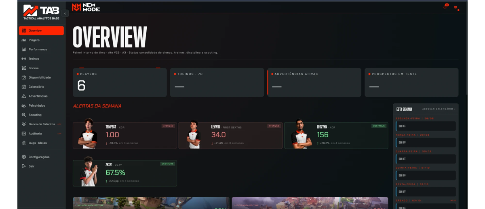
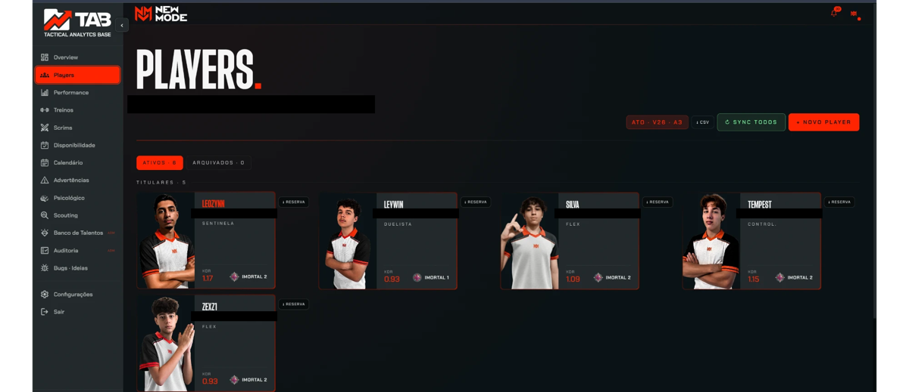
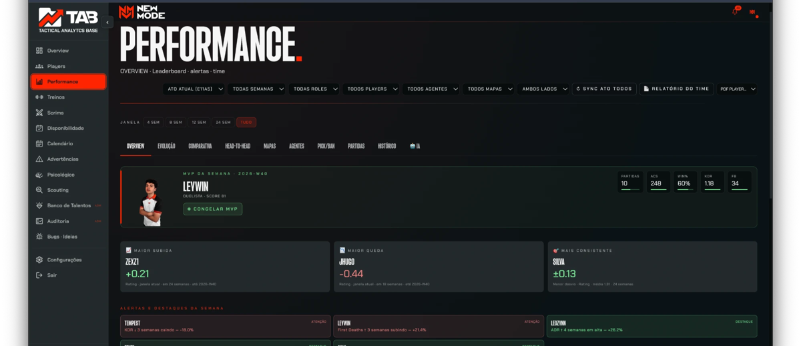
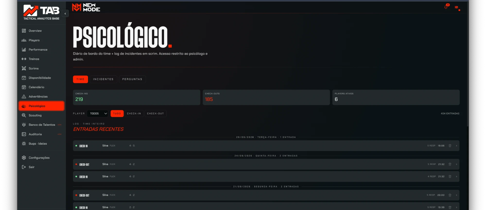
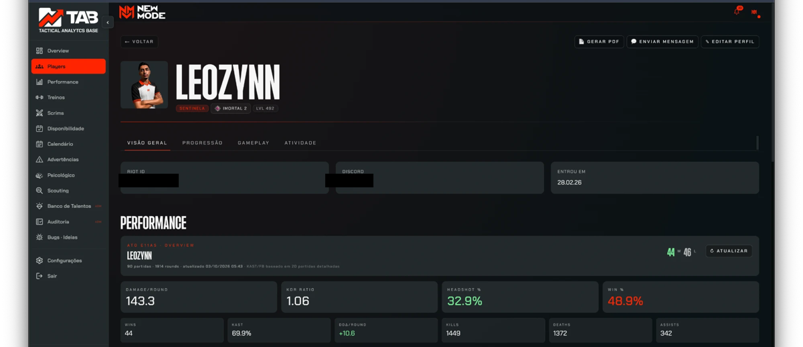

Horas montando, não decidindo
Antes de cada decisão, alguém junta dado de lugares que não conversam. Essas horas saem da preparação, que é onde o time ganha.
Para comissões técnicas
Visão de cinco ferramentas em um único lugar.
O TAB tem versão Free e versão Pro — os valores a gente mostra numa conversa, sem compromisso.
Construído dentro de uma organização, com elenco real, por quem opera elenco.
Em conformidade com as políticas de API da Riot Games para dados de partida.
Pré-visualização ilustrativa — não representa dados reais de nenhum time.
Testado em competição real, não em laboratório.
O problema
Terça, 22h40. O time perdeu o scrim por três rounds. Você abre o tracker para ver o desempenho, a planilha para ver quem treinou, o VOD para achar o erro, o chat para lembrar quem avisou que não dormiu, e as anotações do psicólogo, se ele puder compartilhar. Uma hora depois, você tem cinco abas abertas e uma suspeita. Amanhã você vai escalar com base nela.
Antes de cada decisão, alguém junta dado de lugares que não conversam. Essas horas saem da preparação, que é onde o time ganha.
Você sente que um jogador está mal, mas não consegue provar nem explicar o motivo. A escalação sai do instinto, e o instinto fica sem defesa na reunião.
Sono ruim, humor em queda e fadiga aparecem no resultado antes de aparecerem na conversa. Quando o coach percebe, o prejuízo já está no placar.
Dado solto circula do jeito errado: ranking vazado, advertência comentada, comparação sem contexto. Sem controle de quem vê o quê, a ferramenta vira munição.
Se você reconheceu pelo menos dois desses custos, o próximo bloco mostra o tamanho deles no seu time.
Faça a conta
Responda três perguntas rápidas. O resultado aparece na hora, sem cadastro.
Preencha pessoas e horas por semana para ver a conta.
Sua comissão gasta — por mês juntando dado em vez de analisar.
Isso equivale a — de trabalho por ano.
E isso sem contar o que não aparece na conta: a decisão tomada sem o dado cruzado.
Falar com a NewMode sobre issoConsidera semanas de 4,33 por mês e jornada de 8 horas por dia. Você pode mudar os números acima a qualquer momento.
Por que o que existe não resolve
| Categoria | O que faz bem | O que não faz |
|---|---|---|
| Vídeo e tagging tático | Revisão de jogadas, marcação de eventos | Não sabe como o jogador dormiu nem se estava em ciclo de advertência |
| Dados físicos e de saúde | Carga, recuperação, risco de lesão | Foi desenhada para esporte tradicional; ignora o contexto de jogo e o mental |
| Bem-estar mental | Check-in, acompanhamento, rotina de mente | Fica isolada do desempenho: ninguém liga o humor de ontem ao round de hoje |
| Observação e tática de esports | Leitura de partida nativa do jogo | Resolve só a camada tática |
| Planilha e chat | Flexível, grátis, todo mundo sabe usar | Cruzar é trabalho manual, e a informação circula sem controle |
O TAB não pede que você jogue fora o que funciona. Pede que você pare de ser o integrador manual entre todas elas.
A solução
Desempenho tático, estado mental e gestão do elenco, ligados por um sistema que mostra o raciocínio e a fonte.
Sono 4,2 h, humor 3/10 no check-in de ontem. K/D 19% abaixo da média das últimas 4 semanas. Risco de decisão ruim em round de pressão hoje.
Fontes: check-in de 02/10 · últimas 12 partidas · 2 faltas justificadas na semana
Partidas sincronizadas automaticamente, scoreboard round a round e abas de performance por jogador e por time.
Diário de bordo e ocorrências comportamentais acompanhados pelo psicólogo, com acesso isolado.
Roster com histórico imutável, agenda de treinos e scrims, ausências e advertências.
Sem o cruzamento, você tem três painéis. Com ele, você tem uma decisão.
O produto por dentro
Capturas reais do painel que a comissão técnica da NewMode usa hoje, direto do navegador.





Capturas do produto real, com nome, idade, Riot ID e Discord dos jogadores ocultados.
Como funciona
Jogadores, funções e comissão entram com os perfis certos. Cada jogador autoriza o uso dos próprios dados.
Partidas entram sozinhas, treinos e ausências entram pela agenda, e o estado do jogador entra pelo acompanhamento. Você não digita dado duas vezes.
Alertas com fonte, abas de performance e relatório em PDF do time ou do jogador.
Feito para o time
Cada pessoa vê só o que o seu papel pede. O resto o sistema simplesmente não entrega.
| Perfil | O que vê | O que não vê |
|---|---|---|
| Jogador | A própria evolução, treinos e advertências | Comparativos entre jogadores e o histórico disciplinar dos colegas |
| Coach | Visão tática completa e inteligência do elenco inteiro | Dados clínicos do psicólogo |
| Analista | Scouting e scoreboards, para preparação | Funções administrativas |
| Psicólogo | Diários de bordo e ocorrências comportamentais | Isolamento total dos dados médicos e psicológicos dos demais perfis |
| Admin | Roster, scouting de talentos, agenda confidencial e advertências | — |
Dados de saúde mental só entram com autorização do jogador e só são vistos pelo psicólogo. Você decide o que compartilha.
A regra vale no servidor, não só na tela. Mesmo que o jogador abra a página de outro perfil pelo endereço, o dado não chega.
Quem lidera um elenco sabe: a informação certa na mão errada custa mais que a falta dela.
Prova e confiança
O TAB nasceu para gerir o elenco de Valorant da NewMode. Hoje ele roda a rotina do time: roster, treinos, advertências e performance.
Feito por quem opera elenco, não por quem só assistiu de fora. A NewMode constrói o TAB porque sentiu o mesmo problema que o seu time sente hoje.
O elenco da NewMode no TAB, hoje
Números do uso interno em 03/10/2026 (219 check-ins, 185 check-outs; 90 partidas de um único jogador).
Oferta
Conte o tamanho do seu elenco e a sua rotina. A gente mostra o que faz sentido pro seu time, sem letra miúda.
O que entra em cada plano e os valores a gente ajusta na conversa — depende do tamanho do seu elenco e da sua rotina.
Perguntas frequentes
Não. Ele tira o trabalho de juntar dado e entrega a informação pronta. A análise e a decisão continuam sendo da comissão.
Não. Cada perfil enxerga só o que o seu papel exige, e a regra vale no servidor.
Isolados e visíveis só para o psicólogo, com autorização do jogador.
Hoje, só Valorant.
O TAB é para o seu time: sua evolução, seus treinos, suas partidas. Não fazemos análise de adversário — a Riot só permite uso de dados de terceiros com autorização individual de cada jogador.
Das contas dos próprios jogadores, com a autorização de cada um, dentro das exigências da API da Riot Games.
Sim. O TAB tem uma versão Free e uma versão Pro, com mais recursos. O que cada uma inclui e os valores a gente mostra numa conversa, porque dependem do tamanho e da rotina do seu elenco.
Ainda estamos medindo esse tempo com os primeiros times. Pergunte na conversa — a gente é direto sobre o que já sabe e o que ainda está validando.
Ainda estamos formalizando a política de exportação e exclusão. Já temos uma resposta prática para isso — pergunte na conversa.

Agende uma conversa e veja o que cinco abas abertas não mostram.